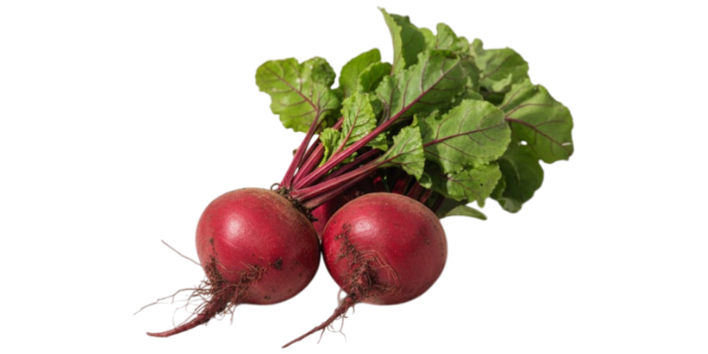

Organic Beets
2.50 € / kg
Sweet, earthy beets from Olivia Reynolds' 12-hectare farm outside Lviv, grown in chemical-free black-earth soil. The greens are edible — treat them like chard. Ideal for roasting, borsch, cold-press juicing, or vibrant salads.
In season
Nutrition · per 100 g
43kcal
1.6gprotein
9.6gcarbs
2.8gfibre
Quick recipe
Roast whole at 200°C for 45 min. Peel, slice with goat cheese, candied walnuts and balsamic drizzle. Serves 2 in 50 min.
PackagingPaper bag, compostable
StorageFridge 2–4°C, up to 2 weeks
DeliveryNext-day: Kyiv, Lviv, Dnipro
SoilBlack earth, no-till
1 kg
×